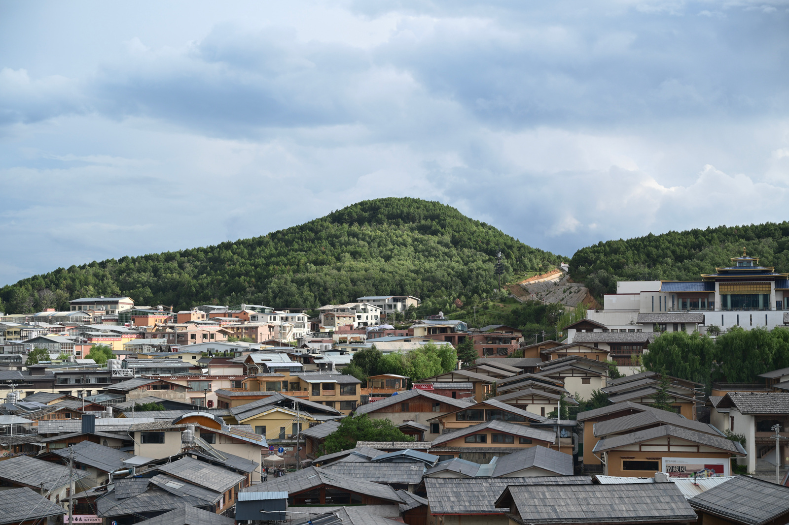
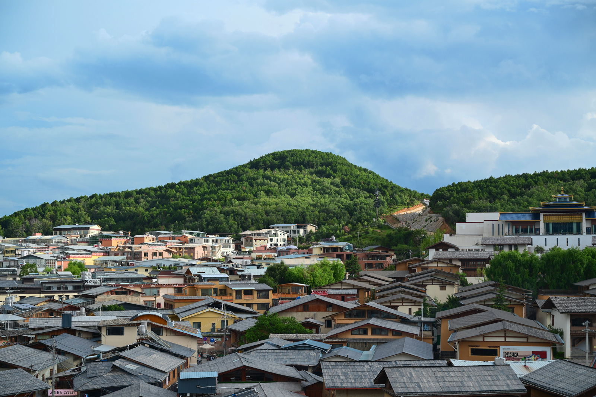
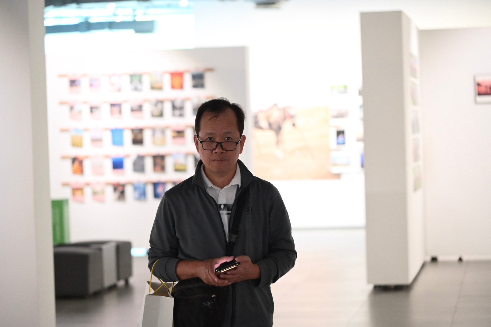
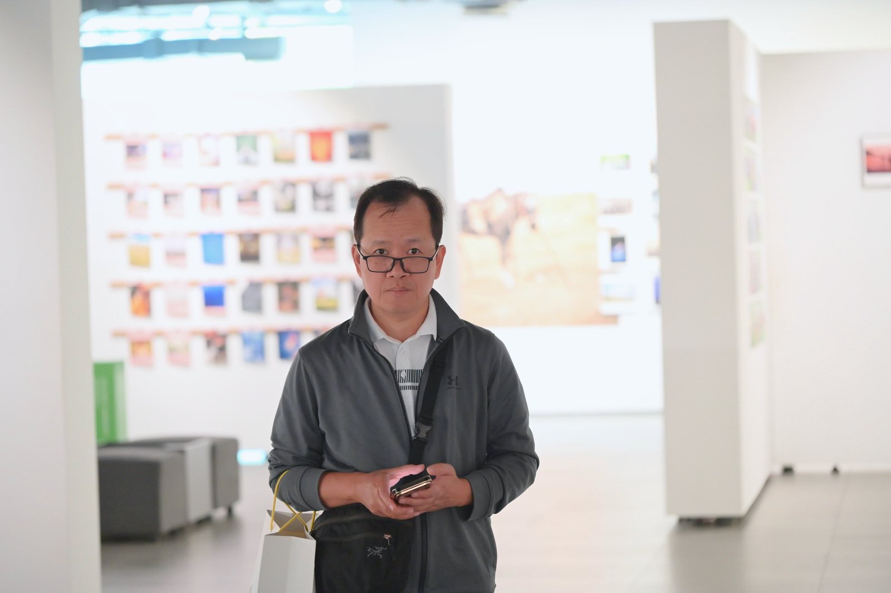
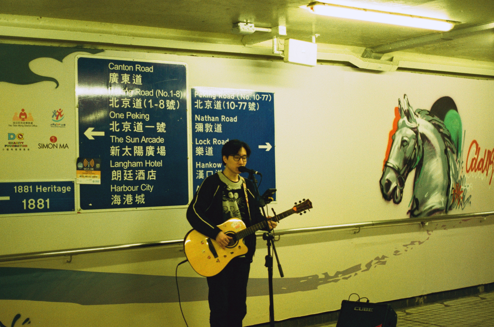
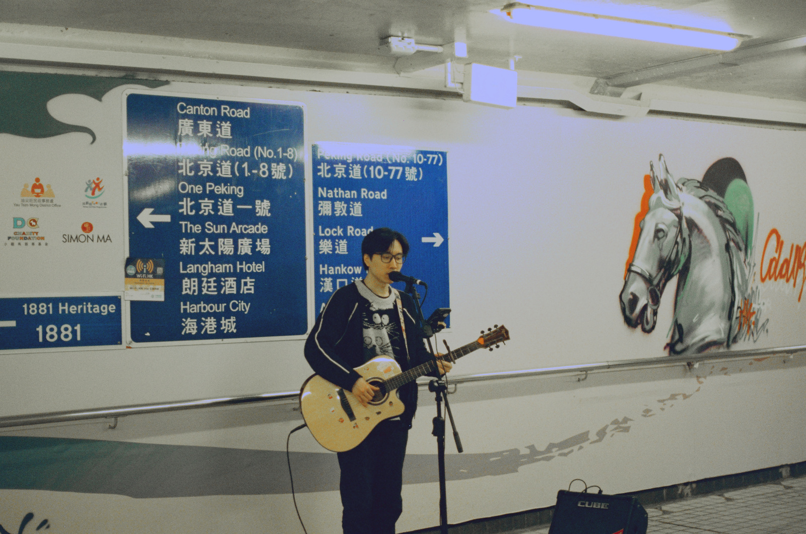

从照片提出完整风格意图，用可解释的颜色与影调控制生成独立候选。 保留原图细节，把最终选择留给你。


Give the village a vivid slide-film palette with intense green trees, cyan-blue sky and dense contrasting shadows. Blend three parts of this treatment with one part of the original, preserving the clouds and roofs.


Create a bright airy portrait by opening dark midtones and shadows, keeping neutral skin and gently compressing bright tones. The face must stay readable despite the bright background; avoid a grey veil.


Remove the strong green-yellow cast for clean documentary colour, with near-neutral light walls, natural skin and warm guitar wood. Open the midtones moderately and retain separation in the dark clothing.
照片调色通常没有唯一答案。我们研究的是：从一张真实 JPEG 出发，生成几张各自成立、风格可辨、仍忠于原片的候选，让用户决定哪一种更适合这张照片。
这里有三个相互牵制的目标：单张要好看，候选要有区别，修改要可控。 单纯扩大颜色距离可能只得到偏色；单纯贴近配对目标又可能让所有候选过于保守。 因此我们把“理解风格”“执行能力”和“用户可选性”分开检验。
HDRNet、 SepLUT已研究高效颜色映射， InstantRetouch和 PixTalk也涉及语言引导的照片处理。 因此“预测参数”或“接受文字”本身不是充分的新意。我们希望证明的是：完整意图的可执行性、单张质量与同图选择覆盖能在一个可复现系统中同时成立。
规划器观察照片并自主提出风格，执行器理解完整意图，预测滑块与有界残差 LUT。 每个候选从同一原图独立渲染，由用户选择，也可以保留原图。
左右滑动查看完整图示
规划器的输出是照片相关的开放描述，例如“提亮逆光人物，柔和压缩背景亮部，保持自然肤色”。 电影、胶片、清透与黑白只是可能方向；系统的目标不是从固定风格编号中选一个。
当前将风格理解与渲染表达分开检查：以渲染实验检验颜色与影调表达，再独立评价学习预测器。自动规划接口与本地文字条件执行入口已具备， 但端到端自主规划的质量、学习模型对新意图的落实能力仍需分别验收。
网络预测的是颜色处理方式，最终输出由显式渲染器计算。 这样可以把低分辨率特征预测与原尺寸执行分开，也能检查一次错误究竟来自语言、参数预测还是颜色算子。
ResNet18 提取 512 维特征；均值、标准差、线性 RGB 均值与亮度直方图补充 25 维全局统计。
这些统计保留曝光与颜色分布信息，帮助同一风格适应不同输入。
Qwen3-Embedding-0.6B 编码完整描述，取末有效 token 的前 512 维并做 L2 归一化，再映射为 128 维条件。
保留否定、范围和最终状态；超长输入明确拒绝，不静默截断成关键词。
控制量分为白平衡 2 项、曝光与影调 6 项、自然饱和度与饱和度 2 项、八个色带的 H/S/L 共 24 项，以及 6 个曲线控制点。 模型输出限制在合法范围，曲线采用单调构造；控制值不是直接等同于 Lightroom 的内部处理。
额外分支混合 8 个 17³ 残差 LUT 基底，混合系数的绝对值和受限，归一化 RGB 域内残差幅度上限为 0.15。 它补充滑块难以表达的颜色关系，同时保留滑块解释。训练中的平滑约束减少不连续映射，但边界与平滑都不是审美保证。
当前渲染版本在线性光域处理白平衡与曝光，并使用配方增益上限控制高光肩部，再执行影调、颜色和残差映射。 它缓解了过早夹断，却仍可能由后续操作产生截断、残色或灰雾，必须看最终成片。
每条配方都从同一原始 JPEG 独立渲染，原尺寸执行按二维块处理以控制内存。 图像坐标不经过生成式重画；颜色和局部对比仍会改变，因此“保持坐标”与“没有损伤”分开验证。
当前质量瓶颈不只是网络容量。输入分布、风格目标是否好看，以及描述是否真正对应最终效果，都会决定模型学到什么。
左右滑动查看完整图示
基础数据来自 MIT-Adobe FiveK。 本地流程将 RAW 中性解码为 sRGB，并把专家目标转换到相同颜色空间。 它提供配对监督，但与相机 JPEG、手机照片及已有后期的输入并不相同。
最近的渲染与监督对照固定 388 张训练图、25 张开发图，以照片为单位划分，相关专家版本不跨集合。当前这组执行器开发使用 128 × 192 监督分辨率，原尺寸效果另行检验。 训练混入已有成片与曝光、颜色扰动，检验输入纠偏和风格执行能否共存。 这 25 张图已反复用于开发，不能再作为未见泛化证据；另有 8 张熟悉的相机照片用于原尺寸诊断。
训练描述覆盖效果、强度、混合、排除项和操作后的最终状态。 “去掉新加的紫色”不一定等于“删除照片里所有颜色”；“单色”也可能指有色的棕褐或蓝晒。 因此我们同时检查同义措辞、相反意图和语义边界，推理时不查询配方表，也不把长句降级为固定风格分类。
主要图像损失结合 RGB L1 与 ΔE76，并约束控制幅度和残差平滑。 对有明确颜色变换目标的训练项，将预测的同一配方作用于均匀 RGB、近中性和灰阶探针，补充照片中未覆盖的颜色监督。 已审查的六类外部颜色目标只参与训练与诊断，不成为推理期预设菜单。
颜色探针项只施加到具备匹配颜色函数目标的样本。对照组固定图像、描述、随机采样与更新预算，分别检查渲染、监督与文字表示的影响。
目视审查发现，部分暖调目标本身会压暗人物，部分电影/胶片目标差别太弱。模型即使更接近这些目标，也不等于成片更好。 最近按图设计的教师小样覆盖 4 张照片、每张 4 个完整意图；首轮 16 个目标仍有风格分离不足与灰雾。 后续加强其中 8 个彩色目标后，部分水景与室内改善，但整批仍未达到训练采纳标准，因此没有据此启动学生训练。
下面把学习模型、参数表达诊断与实现一致性分开报告。它们回答不同问题，不能用回放正确替代成片质量，也不能用几张精选图证明开放意图泛化。
先在同一数据协议下检查参数预测的基础组件：739 张训练、50 张内部验证、198 张有效测试照片，八个模型各训练 60 轮。 下表是 384 × 256、单随机种子的 sRGB 配对重建结果，按照片聚合所有专家目标。 专家标签与训练集原型用于消融，不是当前开放文字执行器的风格菜单。
| 条件与输入设置 | 执行表示 | PSNR ↑（dB） | ΔE76 ↓ |
|---|---|---|---|
| 无条件 | 滑块 | 21.452 | 11.295 |
| 无条件 | 滑块 + 残差 LUT | 21.500 | 11.018 |
| 专家条件 | 滑块 | 21.673 | 11.223 |
| 专家条件 + 成片输入 | 滑块 | 21.320 | 11.666 |
| 专家条件 | 滑块 + 残差 LUT | 21.730 | 10.918 |
| 专家条件 + 成片输入 | 滑块 + 残差 LUT | 21.575 | 11.179 |
| 训练集 CLIP 原型 | 滑块 | 20.891 | 11.996 |
| 训练集 CLIP 原型 + 合成监督 | 滑块 | 19.326 | 13.950 |
残差的价值需要与输入适应一起看：在专家成片输入压力测试中，专家条件 LUT 模型相对不改输入的 PSNR 增益为 −0.702 dB； 加入成片输入训练后为 +1.216 dB，按原照片 bootstrap 的 95% 区间为 [1.006, 1.410]。 这是 FiveK 专家成片域的适应证据，不能代替真实相机 JPEG 的独立审美评价。
| 检验问题 | 受控设置 | 实际结果 | 当前判断 |
|---|---|---|---|
| 高光处理是否改善 | 同初始化，两组各 3,200 更新；渲染器与匹配监督目标共同替换，按共同目标评价 | 亮区 RGB MAE 0.073924 → 0.055188 下降 25.35% | 高光目标匹配改善；共同基础目标域损失仅降 4.42%，黑白残色与暗脸仍存在，模型未采纳。 |
| 颜色函数监督是否足够 | 同初始化，两组各 1,600 更新；只增加干净域函数约束 | 干净基础域损失下降 7.01%；共同基础目标域损失仅下降 1.12% | 局部均值改善没有解决成片；最坏黑白输出的每图平均 RGB 通道差为 0.114486（归一化值），超过预设 0.02。 |
| 完整文字是否理解最终去色 | 同读出初始化与 1,200 更新；冻结末层 vs. Q/V 低秩适配 | 原 276 句两组均 11 错；新 32 句错误 7 → 6 | 新句严格门槛均有 7 项失败。适配未解决语义组合，不接入图像推理。 |
| 现有渲染器的表达能力 | 3 张 JPEG × 3 条完整意图；40 项滑块控制，残差关闭 | 两张全图黑白输出的最大 RGB 通道差均为 0；同一逆光人像的 3 个候选脸区亮度提高 0.73–1.31 EV | 支持继续改进参数预测与监督。只涉及这批已看过的诊断照片，不是学习模型结果。 |
| 配方是否可精确回放 | 9 个渲染能力诊断结果 + 9 个学习模型去残差对照，均按原尺寸输出 | 18 份 JSON 磁盘回放 最大 uint8 像素差均为 0 | 完整配方与渲染路径一致；不能据此推断审美质量。 |
| 显式资源入口能否独立复现 | 外部源码目录与安装后的 wheel，分别对同一张 6048 × 4032 原图执行相同 3 条意图 | 编码、40 控件、残差与 RGB 均一致；6 份 JSON 回放误差为 0 | 入口与打包执行一致。使用同一台机器的运行库，尚非干净机器安装验证。 |
目前最重要的结论：参数化执行已经可运行、可解释并可回放；学习模型仍未稳定做到理解并执行风格，成片质量也仍需改进。亮区或训练误差的改善，尚不足以支持默认权重替换。
基础受控表来自正式完成记录与 results/peaknet/metrics.json，200 张构建测试图按预先对齐规则剔除 2 张，实际为 198 张；未将依赖测试目标的 oracle 或专家均值混入可部署行。八模型结果只支持基础组件分析，不代表当前 Qwen 文字模型。
渲染匹配与颜色函数对照分别见工作区 J29、J35 的计划、完整评估及原尺寸目视记录。亮区掩膜固定取同一干净参考中最大 sRGB 通道大于 0.9 的像素；RGB MAE 为目标匹配误差。
文字诊断见 J34。严格去色判断要求正类概率至少 0.95、负类至多 0.05。原 276 句评分完整保留；剔除其中 3 条事后发现歧义的句子，另报 273 条清晰句的结果，32 新句为作者编写的开发检查，非独立标注测试。
首轮渲染能力诊断：两张黑白指标是在全部原尺寸像素上计算 max(max(R,G,B)−min(R,G,B))，单位为 8-bit 级。 人像使用既有手工脸框，先线性化 sRGB，再取 Y = 0.2126R + 0.7152G + 0.0722B 的区域中位数；EV 为相对原图的 log₂ 比值。
资源入口一致性见 2026-10-04 local_v5b 实际验收。被加载的研究权重仍未获质量采纳；复现一致与质量通过分别记录。所有表格结果均来自本项目内部研究。
PSNR、色差和重建损失能够检查目标匹配，无法单独判断目标是否好看。 本轮已经观察到“亮区误差下降，但逆光脸仍偏暗”和“干净域损失下降，但黑白局部仍残色”。这正是保留全图与主体细节检查的原因。
检查主体可读性、肤色与场景光线的关系、高光与暗部层次、局部残色、色带、接缝及候选重复度。 人脸 EV、RGB 通道差和候选间色差是可解释诊断，不自动代替人的判断。 室内彩色样张已由用户明确接受；局部灯具颜色不能直接当作整幅白平衡失败。
计划先邀请 3–5 位未参与开发的评委进行匿名先导评价：每组选出最喜欢的一张，同时允许原图，再比较两组选择。 分开记录单张质量、可选性、重复候选和选择时间；照片与评委都是统计单位，不能把同图的多个候选当作独立样本。
候选从同一原图独立生成，可以比较、微调，也可以保留原图。选定后按原尺寸导出照片，并保存调色配方。
保存滑块与残差 LUT，在相同渲染器中精确回放。
导出 .cube 文件，便于其他工具近似呈现这套颜色处理。
将兼容滑块近似映射到外部工具；残差 LUT 效果需用完整配方保留。
当前模块入口接受本地 checkpoint、文本模型目录、JPEG、完整意图文件与输出目录。 缺失资源、版本不匹配或参数越界会明确停止，不联网找替代模型，也不以随机权重兜底。
python -m photopeaks.local_v5b_cli --help
运行后生成原图选项、每条意图的独立候选、完整 JSON 配方与可比较页面。 输入和渲染版本与配方绑定；权重、文本编码设置和所需依赖都有明确资源契约。自有代码采用 MIT，模型与照片分别遵循来源条款，完整开源包仍在整理。
全局颜色映射：相同输入颜色会被同样处理，无法仅靠颜色识别一处是皮肤、另一处是墙面；独立空间控制尚未纳入当前主线。
语言与风格质量：长句约束、最终状态以及不同场景下的风格强度仍有失败。当前样张展示参数表达能力，学习模型还不能稳定复现同等质量。
泛化与发布：训练代理与真实 JPEG 有分布差异；现有开发照片已被反复观察，独立确认、跨机器安装和权重分发仍需补齐。RAW 在 JPEG 质量稳定后推进。